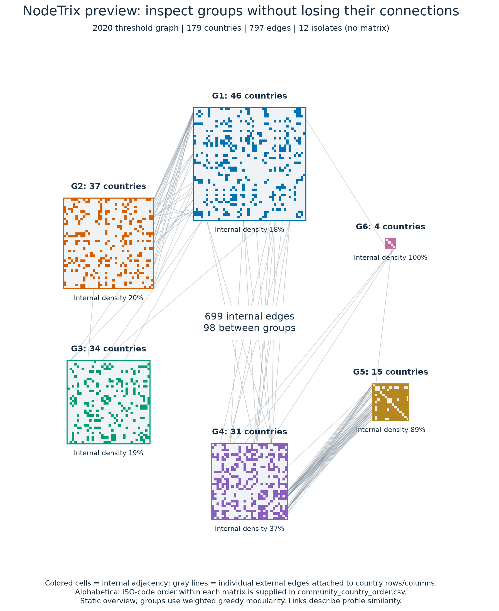
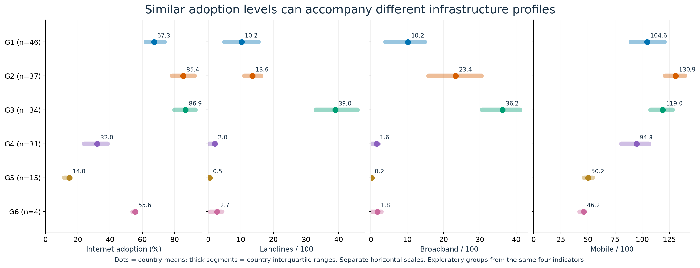
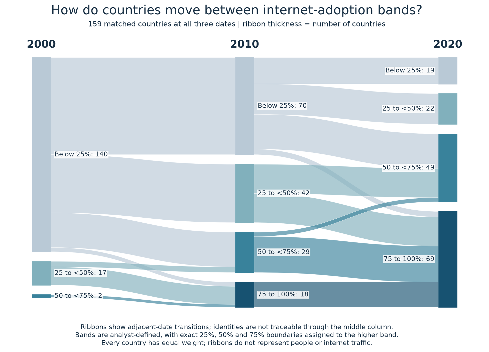
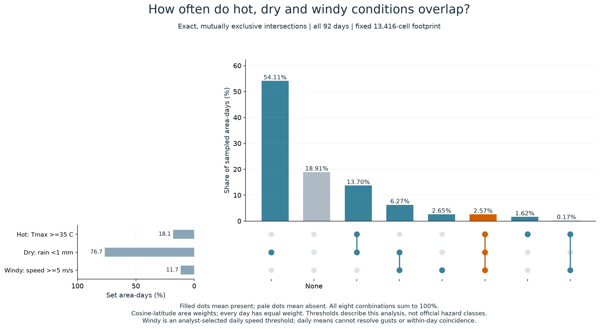
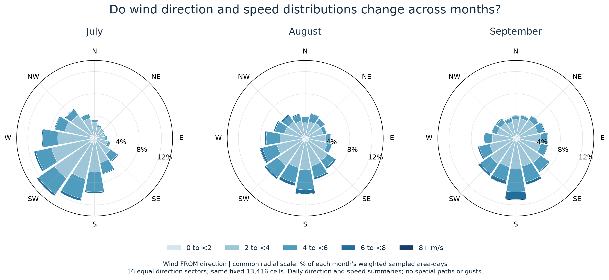

Five exploratory previews from existing assignment data, informed by the full lecture review. These are candidate extensions. The report and its 32 figure IDs are unchanged.
Full lecture-to-data review · Numerical audit · Grouping sensitivity
Question: Which groups are internally connected, and how do groups connect?

Reading: 699 of 797 edges fall inside 6 connected groups; 98 join groups. 12 isolated countries remain in the node set.
Limits: The grouping optimizes internal connectivity on this derived graph. It is not independent proof of natural country types. Matrix sizes depend on group size; compare numerical density labels. Country labels need zoom/details in a future interactive version.
Question: Can similar internet adoption coexist with different infrastructure profiles?

Reading: Group means and interquartile ranges describe the revised threshold graph; see community_profiles.csv for exact values.
Limits: Descriptive country-weighted summaries of groups derived from these indicators. Subscription intensities are not percentages of people. Group sensitivity is exported separately.
Question: Who moves between adoption bands as the overall distribution changes?

Reading: The >=75% band grows from 0 to 69 countries on a fixed 159-country panel.
Limits: Country counts, not population. Band thresholds lose within-band change. Two adjoining ribbons do not uniquely identify the same country path; CSV contains the actual identities.
Question: Does a frequent individual condition often coincide with the other conditions?

Reading: Hot/dry/windy together occupy 2.57% of weighted area-days; hot/dry with any wind occupy 16.27%.
Limits: This is an area-day summary of daily fields, not population exposure or evidence of within-day simultaneity. For three sets a Venn diagram is also possible; aligned bars make exact quantities easier to compare here. The combined frequency is not a measure of persistence.
Question: Does a pooled wind summary conceal monthly differences?

Reading: Compare speed composition and prevailing FROM-direction frequencies on identical radial scales.
Limits: Pooled spatial summary loses geography. Sector size affects peaks. Daily fields cannot resolve gusts. Near-calm observations are retained in the lightest speed bin and their directions carry little physical meaning.